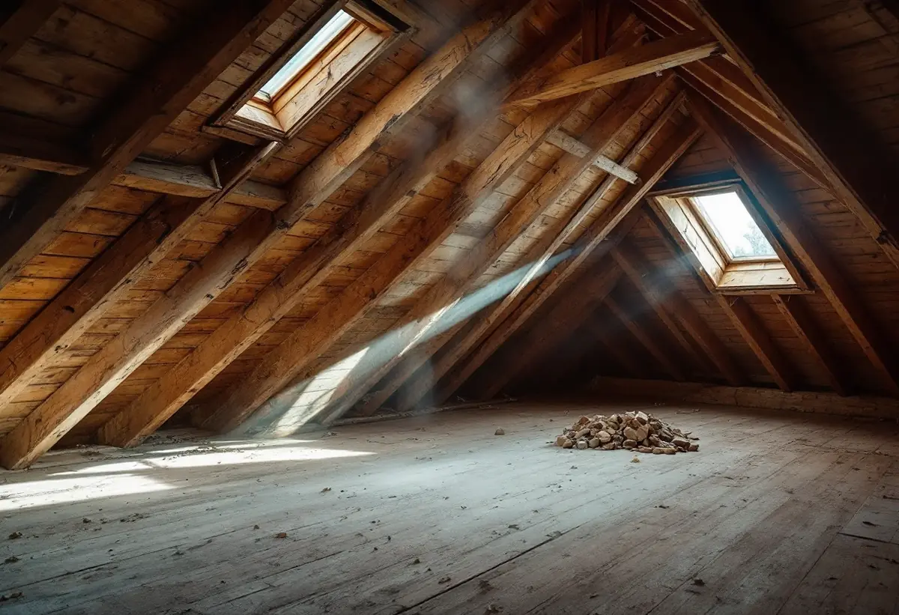
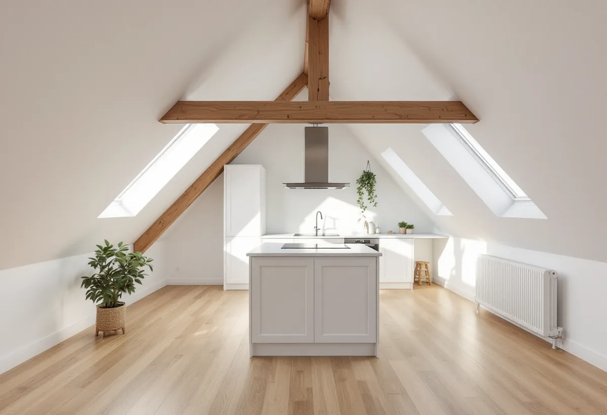

Platsbesök
Vi tittar på vinden, takstolarna, trapphuset och klassningen.
När en bostadsrättsförening på Södermalm vill bygga nya lägenheter är vinden ofta den enda plats som finns kvar. Geal Entreprenad AB bygger vindslägenheter som total entreprenad och hjälper föreningen genom bygglov, brandskydd och projektering.
Enligt Stockholms stads områdesfakta fanns det 2024 omkring 77 500 bostäder i Södermalms stadsdelsområde. 43 680 av dem var bostadsrätter, och nästan alla låg i flerbostadshus.
För en förening kan en ny vindslägenhet vara ett sätt att finansiera underhåll, men projektet ställer krav på både styrelsen och huset. Staden skriver att möjligheterna beror på byggnadens placering i stadsbilden, dess kulturhistoriska värde och de tekniska förutsättningarna.

Du behöver bygglov för att inreda ytterligare en bostad i en befintlig byggnad, till exempel när vinden ska inredas. Ibland hör en tillbyggnad eller fasadändring ihop med projektet, till exempel nya takkupor eller fönster.
Finns ett förbud mot vindsinredning i detaljplanen kan bygglov ändå ges för en eller flera nya bostäder om planens genomförandetid har gått ut och övriga förutsättningar är uppfyllda. Stadsmuseets karta visar om huset är klassat, vilket kan påverka hur taket får ändras.
Nya lägenheter på vinden ska uppfylla krav på tillgänglighet. Staden skriver att byggnadens befintliga förutsättningar i vissa fall kan göra att anpassningar eller undantag godtas, och att endast mindre lägenheter om högst 35 kvadratmeter som inreds på befintlig vind under vissa förutsättningar kan undantas från tillgänglighetskraven.
Planritningen ska visa fast inredning och möbler, så att tillgänglighet och användbarhet kan bedömas för varje våningsplan. Hissen, trappan och storleken på lägenheterna hänger därför ihop redan i det första skissarbetet. Ett hus utan hiss kan till exempel leda till att föreningen väljer flera små lägenheter i stället för en stor, eller att en hiss byggs samtidigt. Vi tar fram alternativen så att styrelsen kan jämföra dem.
En vindsinredning ändrar i regel brandskyddet. Staden förklarar att ändringar i byggnadens brandcellsindelning alltid påverkar brandskyddet, och att nya dörrar i en brandcellsgräns eller ändrade utrymningsvägar är exempel på ändringar som avsevärt påverkar det. Sådana ändringar kräver anmälan och startbesked.
Vi tar in en brandkonsult tidigt, eftersom utrymningen från den nya lägenheten och avskiljningen mot trapphuset styr planlösningen. Staden rekommenderar själv en sakkunnig brandkonsult när man är osäker.
En vind som byggs om till bostad ska bära möbler, människor och nya väggar, och vindsbjälklaget är inte självklart dimensionerat för det. Takstolarna kan behöva förstärkas eller bytas om nya takkupor tas upp, och ljudet mot lägenheterna under måste hållas nere.
Vi tar in en konstruktör som går igenom bjälklag och takstolar innan ritningarna låses. Staden skriver att en kontrollansvarig i vissa projekt behöver anmälas redan vid ansökan, och att den kontrollansvariga ska ha en självständig ställning i förhållande till den entreprenör som utför arbetet. Därför är det föreningen, inte vi, som anlitar den kontrollansvariga.
Staden har en vägledning för vindsinredning, men påpekar att den inte är uppdaterad efter ändringarna i plan- och bygglagen den 1 december 2025. Viss information kan därför vara inaktuell, och vi stämmer av med staden när något är oklart.
Staden uppmanar också till att informera grannar och styrelse om planerna. Vi tar fram ett underlag som styrelsen kan presentera för medlemmarna. Om renovering av befintliga lägenheter kan du läsa under totalrenovering på Södermalm.

Vi tittar på vinden, takstolarna, trapphuset och klassningen.
Detaljplan, tillgänglighet och brandskydd reds ut.
Ritningar, brandskyddsbeskrivning och kontrollansvarig tas fram.
Varje del av projektet står för sig, som underlag för stämman.
Arbetet planeras så att de boende störs så lite som möjligt.
Intyg och dokumentation lämnas till föreningen.
En vindsinredning som föreningen bekostar ger inget rotavdrag. Skatteverket ger avdrag i en bostadsrätt bara för arbete inne i bostaden som medlemmen själv ansvarar för.
Föreningen planerar därför projektet utan rotavdrag. Den som senare köper lägenheten kan få avdrag för egna arbeten i den.
Antalet lägenheter, takets skick, hiss och trappa, brandskyddet och hur mycket fasad och tak ändras. Efter ett gratis platsbesök får styrelsen ett skriftligt kostnadsförslag.
Total entreprenad för villan.
Byggfirma →Takbyte, takbesiktning och plåtarbeten.
Takläggare på Södermalm →Stenstad, storgårdskvarter och bergen.
Takrenovering på Södermalm →Vattenskador, ansvar och husens olika åldrar.
Badrumsrenovering på Södermalm →Putsen mot gatan.
Fasadmålning på Södermalm →Kalkputs, kalkfärg och plåt på lister.
Fasadrenovering på Södermalm →Föreningar, gatufasad och gårdsfasad.
Fönsterbyte på Södermalm →Föreningens fönster, besiktigade före beslut.
Fönsterrenovering på Södermalm →Renovera, riva och sortera golvet.
Golvläggare på Södermalm →Slipa golven i den nyköpta lägenheten.
Golvslipning på Södermalm →Kokvrå, gasspis och kulturvärden i lägenheten.
Köksrenovering på Södermalm →Äldre färglager, bättring och provytor.
Målare på Södermalm →Takkupor, vindar och äldre tak.
Plåtslagare på Södermalm →Väggar, dörrar och förvaring i lägenhet.
Snickare på Södermalm →Ny tapet och gamla tapetlager.
Tapetsering på Södermalm →Lägenheten i takt med stambytet.
Totalrenovering på Södermalm →